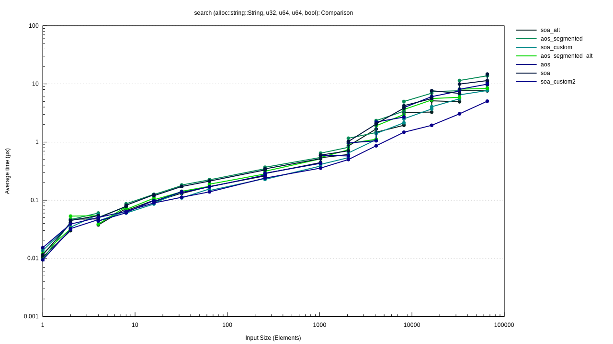

search (alloc::string::String, u32, u64, u64, bool)
Violin Plot

This chart shows the relationship between function/parameter and iteration time. The thickness of the shaded region indicates the probability that a measurement of the given function/parameter would take a particular length of time.
Line Chart
This chart shows the mean measured time for each function as the input (or the size of the input) increases.
search (alloc::string::String, u32, u64, u64, bool)/aos
/aos/pdf.svg)
|
/aos/regression.svg)
|
search (alloc::string::String, u32, u64, u64, bool)/aos_segmented
/aos_segmented/pdf.svg)
|
/aos_segmented/regression.svg)
|
search (alloc::string::String, u32, u64, u64, bool)/aos_segmented_alt
/aos_segmented_alt/pdf.svg)
|
/aos_segmented_alt/regression.svg)
|
search (alloc::string::String, u32, u64, u64, bool)/soa
/soa/pdf.svg)
|
/soa/regression.svg)
|
search (alloc::string::String, u32, u64, u64, bool)/soa_alt
/soa_alt/pdf.svg)
|
/soa_alt/regression.svg)
|
search (alloc::string::String, u32, u64, u64, bool)/aos #2
/aos_2/pdf.svg)
|
/aos_2/regression.svg)
|
search (alloc::string::String, u32, u64, u64, bool)/aos_segmented #2
/aos_segmented_2/pdf.svg)
|
/aos_segmented_2/regression.svg)
|
search (alloc::string::String, u32, u64, u64, bool)/aos_segmented_alt #2
/aos_segmented_alt_2/pdf.svg)
|
/aos_segmented_alt_2/regression.svg)
|
search (alloc::string::String, u32, u64, u64, bool)/soa #2
/soa_2/pdf.svg)
|
/soa_2/regression.svg)
|
search (alloc::string::String, u32, u64, u64, bool)/soa_alt #2
/soa_alt_2/pdf.svg)
|
/soa_alt_2/regression.svg)
|
search (alloc::string::String, u32, u64, u64, bool)/aos #3
/aos_3/pdf.svg)
|
/aos_3/regression.svg)
|
search (alloc::string::String, u32, u64, u64, bool)/aos_segmented #3
/aos_segmented_3/pdf.svg)
|
/aos_segmented_3/regression.svg)
|
search (alloc::string::String, u32, u64, u64, bool)/aos_segmented_alt #3
/aos_segmented_alt_3/pdf.svg)
|
/aos_segmented_alt_3/regression.svg)
|
search (alloc::string::String, u32, u64, u64, bool)/soa #3
/soa_3/pdf.svg)
|
/soa_3/regression.svg)
|
search (alloc::string::String, u32, u64, u64, bool)/soa_alt #3
/soa_alt_3/pdf.svg)
|
/soa_alt_3/regression.svg)
|
search (alloc::string::String, u32, u64, u64, bool)/aos #4
/aos_4/pdf.svg)
|
/aos_4/regression.svg)
|
search (alloc::string::String, u32, u64, u64, bool)/aos_segmented #4
/aos_segmented_4/pdf.svg)
|
/aos_segmented_4/regression.svg)
|
search (alloc::string::String, u32, u64, u64, bool)/aos_segmented_alt #4
/aos_segmented_alt_4/pdf.svg)
|
/aos_segmented_alt_4/regression.svg)
|
search (alloc::string::String, u32, u64, u64, bool)/soa #4
/soa_4/pdf.svg)
|
/soa_4/regression.svg)
|
search (alloc::string::String, u32, u64, u64, bool)/soa_alt #4
/soa_alt_4/pdf.svg)
|
/soa_alt_4/regression.svg)
|
search (alloc::string::String, u32, u64, u64, bool)/aos #5
/aos_5/pdf.svg)
|
/aos_5/regression.svg)
|
search (alloc::string::String, u32, u64, u64, bool)/aos_segmented #5
/aos_segmented_5/pdf.svg)
|
/aos_segmented_5/regression.svg)
|
search (alloc::string::String, u32, u64, u64, bool)/aos_segmented_alt #5
/aos_segmented_alt_5/pdf.svg)
|
/aos_segmented_alt_5/regression.svg)
|
search (alloc::string::String, u32, u64, u64, bool)/soa #5
/soa_5/pdf.svg)
|
/soa_5/regression.svg)
|
search (alloc::string::String, u32, u64, u64, bool)/soa_alt #5
/soa_alt_5/pdf.svg)
|
/soa_alt_5/regression.svg)
|
search (alloc::string::String, u32, u64, u64, bool)/aos #6
/aos_6/pdf.svg)
|
/aos_6/regression.svg)
|
search (alloc::string::String, u32, u64, u64, bool)/aos_segmented #6
/aos_segmented_6/pdf.svg)
|
/aos_segmented_6/regression.svg)
|
search (alloc::string::String, u32, u64, u64, bool)/aos_segmented_alt #6
/aos_segmented_alt_6/pdf.svg)
|
/aos_segmented_alt_6/regression.svg)
|
search (alloc::string::String, u32, u64, u64, bool)/soa #6
/soa_6/pdf.svg)
|
/soa_6/regression.svg)
|
search (alloc::string::String, u32, u64, u64, bool)/soa_alt #6
/soa_alt_6/pdf.svg)
|
/soa_alt_6/regression.svg)
|
search (alloc::string::String, u32, u64, u64, bool)/aos #7
/aos_7/pdf.svg)
|
/aos_7/regression.svg)
|
search (alloc::string::String, u32, u64, u64, bool)/aos_segmented #7
/aos_segmented_7/pdf.svg)
|
/aos_segmented_7/regression.svg)
|
search (alloc::string::String, u32, u64, u64, bool)/aos_segmented_alt #7
/aos_segmented_alt_7/pdf.svg)
|
/aos_segmented_alt_7/regression.svg)
|
search (alloc::string::String, u32, u64, u64, bool)/soa #7
/soa_7/pdf.svg)
|
/soa_7/regression.svg)
|
search (alloc::string::String, u32, u64, u64, bool)/soa_alt #7
/soa_alt_7/pdf.svg)
|
/soa_alt_7/regression.svg)
|
search (alloc::string::String, u32, u64, u64, bool)/aos #8
/aos_8/pdf.svg)
|
/aos_8/regression.svg)
|
search (alloc::string::String, u32, u64, u64, bool)/aos_segmented #8
/aos_segmented_8/pdf.svg)
|
/aos_segmented_8/regression.svg)
|
search (alloc::string::String, u32, u64, u64, bool)/aos_segmented_alt #8
/aos_segmented_alt_8/pdf.svg)
|
/aos_segmented_alt_8/regression.svg)
|
search (alloc::string::String, u32, u64, u64, bool)/soa #8
/soa_8/pdf.svg)
|
/soa_8/regression.svg)
|
search (alloc::string::String, u32, u64, u64, bool)/soa_alt #8
/soa_alt_8/pdf.svg)
|
/soa_alt_8/regression.svg)
|
search (alloc::string::String, u32, u64, u64, bool)/aos #9
/aos_9/pdf.svg)
|
/aos_9/regression.svg)
|
search (alloc::string::String, u32, u64, u64, bool)/aos_segmented #9
/aos_segmented_9/pdf.svg)
|
/aos_segmented_9/regression.svg)
|
search (alloc::string::String, u32, u64, u64, bool)/aos_segmented_alt #9
/aos_segmented_alt_9/pdf.svg)
|
/aos_segmented_alt_9/regression.svg)
|
search (alloc::string::String, u32, u64, u64, bool)/soa #9
/soa_9/pdf.svg)
|
/soa_9/regression.svg)
|
search (alloc::string::String, u32, u64, u64, bool)/soa_alt #9
/soa_alt_9/pdf.svg)
|
/soa_alt_9/regression.svg)
|
search (alloc::string::String, u32, u64, u64, bool)/aos #10
/aos_10/pdf.svg)
|
/aos_10/regression.svg)
|
search (alloc::string::String, u32, u64, u64, bool)/aos_segmented #10
/aos_segmented_10/pdf.svg)
|
/aos_segmented_10/regression.svg)
|
search (alloc::string::String, u32, u64, u64, bool)/aos_segmented_alt #10
/aos_segmented_alt_10/pdf.svg)
|
/aos_segmented_alt_10/regression.svg)
|
search (alloc::string::String, u32, u64, u64, bool)/soa #10
/soa_10/pdf.svg)
|
/soa_10/regression.svg)
|
search (alloc::string::String, u32, u64, u64, bool)/soa_alt #10
/soa_alt_10/pdf.svg)
|
/soa_alt_10/regression.svg)
|
search (alloc::string::String, u32, u64, u64, bool)/aos #11
/aos_11/pdf.svg)
|
/aos_11/regression.svg)
|
search (alloc::string::String, u32, u64, u64, bool)/aos_segmented #11
/aos_segmented_11/pdf.svg)
|
/aos_segmented_11/regression.svg)
|
search (alloc::string::String, u32, u64, u64, bool)/aos_segmented_alt #11
/aos_segmented_alt_11/pdf.svg)
|
/aos_segmented_alt_11/regression.svg)
|
search (alloc::string::String, u32, u64, u64, bool)/soa #11
/soa_11/pdf.svg)
|
/soa_11/regression.svg)
|
search (alloc::string::String, u32, u64, u64, bool)/soa_alt #11
/soa_alt_11/pdf.svg)
|
/soa_alt_11/regression.svg)
|
search (alloc::string::String, u32, u64, u64, bool)/aos #12
/aos_12/pdf.svg)
|
/aos_12/iteration_times.svg)
|
search (alloc::string::String, u32, u64, u64, bool)/aos_segmented #12
/aos_segmented_12/pdf.svg)
|
/aos_segmented_12/iteration_times.svg)
|
search (alloc::string::String, u32, u64, u64, bool)/aos_segmented_alt #12
/aos_segmented_alt_12/pdf.svg)
|
/aos_segmented_alt_12/iteration_times.svg)
|
search (alloc::string::String, u32, u64, u64, bool)/soa #12
/soa_12/pdf.svg)
|
/soa_12/iteration_times.svg)
|
search (alloc::string::String, u32, u64, u64, bool)/soa_alt #12
/soa_alt_12/pdf.svg)
|
/soa_alt_12/iteration_times.svg)
|
search (alloc::string::String, u32, u64, u64, bool)/aos #13
/aos_13/pdf.svg)
|
/aos_13/iteration_times.svg)
|
search (alloc::string::String, u32, u64, u64, bool)/aos_segmented #13
/aos_segmented_13/pdf.svg)
|
/aos_segmented_13/iteration_times.svg)
|
search (alloc::string::String, u32, u64, u64, bool)/aos_segmented_alt #13
/aos_segmented_alt_13/pdf.svg)
|
/aos_segmented_alt_13/iteration_times.svg)
|
search (alloc::string::String, u32, u64, u64, bool)/soa #13
/soa_13/pdf.svg)
|
/soa_13/iteration_times.svg)
|
search (alloc::string::String, u32, u64, u64, bool)/soa_alt #13
/soa_alt_13/pdf.svg)
|
/soa_alt_13/iteration_times.svg)
|
search (alloc::string::String, u32, u64, u64, bool)/aos #14
/aos_14/pdf.svg)
|
/aos_14/iteration_times.svg)
|
search (alloc::string::String, u32, u64, u64, bool)/aos_segmented #14
/aos_segmented_14/pdf.svg)
|
/aos_segmented_14/iteration_times.svg)
|
search (alloc::string::String, u32, u64, u64, bool)/aos_segmented_alt #14
/aos_segmented_alt_14/pdf.svg)
|
/aos_segmented_alt_14/iteration_times.svg)
|
search (alloc::string::String, u32, u64, u64, bool)/soa #14
/soa_14/pdf.svg)
|
/soa_14/iteration_times.svg)
|
search (alloc::string::String, u32, u64, u64, bool)/soa_alt #14
/soa_alt_14/pdf.svg)
|
/soa_alt_14/iteration_times.svg)
|
search (alloc::string::String, u32, u64, u64, bool)/aos #15
/aos_15/pdf.svg)
|
/aos_15/iteration_times.svg)
|
search (alloc::string::String, u32, u64, u64, bool)/aos_segmented #15
/aos_segmented_15/pdf.svg)
|
/aos_segmented_15/iteration_times.svg)
|
search (alloc::string::String, u32, u64, u64, bool)/aos_segmented_alt #15
/aos_segmented_alt_15/pdf.svg)
|
/aos_segmented_alt_15/iteration_times.svg)
|
search (alloc::string::String, u32, u64, u64, bool)/soa #15
/soa_15/pdf.svg)
|
/soa_15/iteration_times.svg)
|
search (alloc::string::String, u32, u64, u64, bool)/soa_alt #15
/soa_alt_15/pdf.svg)
|
/soa_alt_15/iteration_times.svg)
|